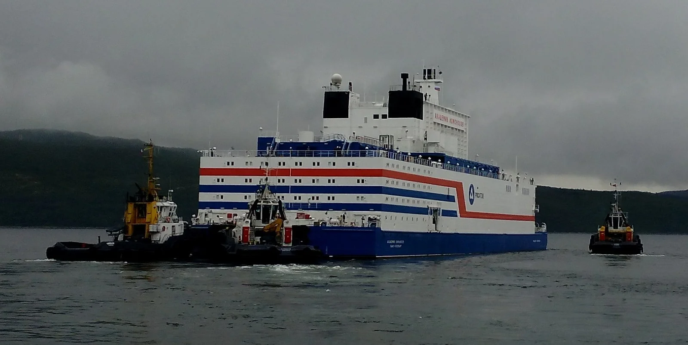
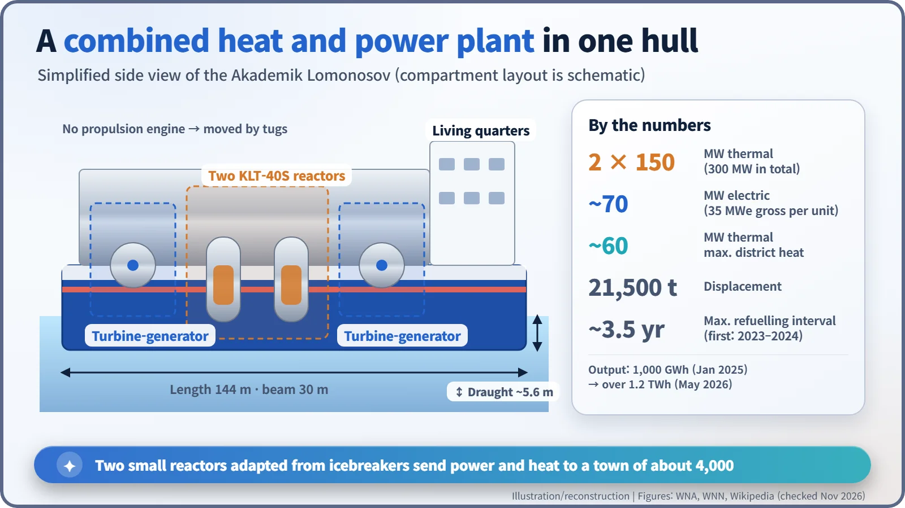
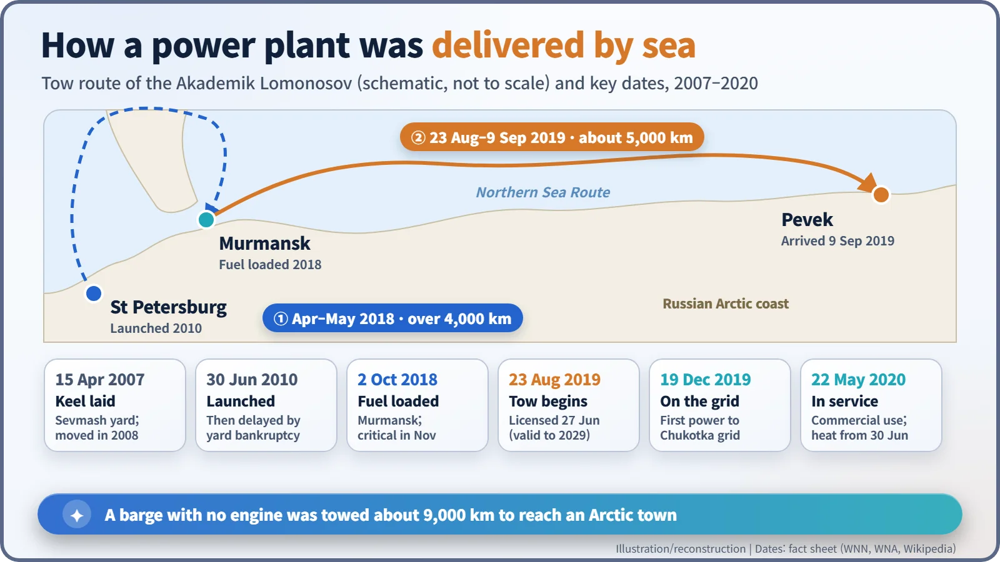
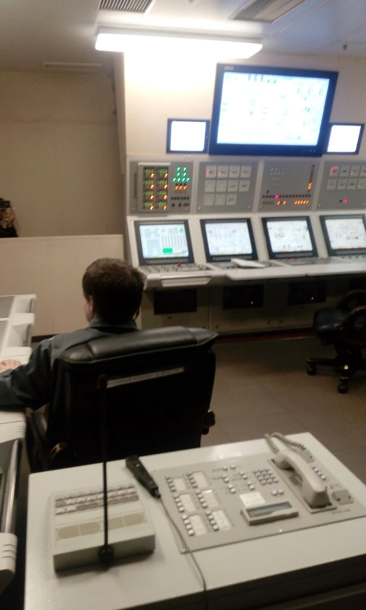

Nuclear History · 290
A Power Plant That Commutes by Sea — Akademik Lomonosov, the Floating Nuclear Plant
Laid down in 2007, fuelled in Murmansk in 2018 and towed to Chukotka in 2019, the Akademik Lomonosov's two KLT-40S reactors have supplied electricity and district heat to Pevek since 2020.
In 2019 Russia towed a complete nuclear power station, built into a 144-metre barge, some 5,000 kilometres along the Arctic coast to the small town of Pevek. The Akademik Lomonosov, with two small reactors adapted from icebreakers, has supplied electricity since December 2019 and district heat since June 2020. Critics called it a "floating Chernobyl"; Rosatom calls it clean, stable energy for a remote region.
A power station with a delivery note
Deliver to: Port of Pevek, Chukotka, Russia. Ship from: Murmansk. Contents: one power station (two reactors included). Method: towed. Departed 23 August 2019; delivered 9 September.
If the shipment had come with a delivery note, it might have read like that. The parcel was 144 metres long and displaced about 21,500 tonnes. Its name is the Akademik Lomonosov, after the 18th-century Russian scientist Mikhail Lomonosov, and it is a nuclear combined heat and power plant that floats. [1] [6]

A town at the end of the line
Pevek sits on the Arctic coast of Russia's far north-east. It has about 4,000 residents and is often described as Russia's northernmost town. No large national grid reaches it. For decades the area relied on the small Bilibino nuclear plant, running since the 1970s, and the coal-fired Chaunskaya combined heat and power plant. Both were ageing, and the mines nearby wanted more electricity. [2] [3]
Russia's answer was to build the replacement in a shipyard and send it by sea. It already had decades of experience with compact reactors aboard nuclear icebreakers. A plant finished in a yard and towed into port avoids a long construction campaign on frozen ground.
A floating nuclear plant was not a new idea in itself. The US Army ran the MH-1A, a roughly 10-megawatt plant aboard the barge Sturgis, in the Panama Canal Zone from 1968 to 1975. But today the Akademik Lomonosov is effectively the only floating nuclear plant selling power and heat commercially. [4]
Twelve years in the making, and two keels
Work began on 15 April 2007, when the keel, the backbone of the hull, was laid at the Sevmash yard in Severodvinsk, with completion targeted for 2010. The next year the government moved the job to the Baltic Shipyard in St Petersburg, and a new keel was laid in May 2009. The hull was launched on 30 June 2010, but the shipyard's bankruptcy and the lawsuits that followed dragged the work out. The two reactors were not installed until October 2013. [1] [6]
Costs grew as well. An early estimate of 6 billion roubles became about 37 billion roubles in a 2015 calculation that included the onshore facilities at Pevek. [1] [6]
Two icebreaker hearts in a barge
The Akademik Lomonosov has no engine of its own; it is a barge. Its power comes from two KLT-40S pressurised water reactors, adapted from icebreaker propulsion reactors. In a pressurised water reactor the water is kept under high pressure so it does not boil while it carries heat away from the core. Each reactor produces 150 megawatts of heat and turns 35 megawatts of it into electricity, so together they deliver about 70 megawatts of electric power. That is less than a fifteenth of a typical large reactor. The leftover heat is put to work: up to about 60 megawatts of heat can be sent to the town's district heating network. [1] [3] [6]

Fuel in Murmansk, then off to work
On 28 April 2018, still without fuel, the barge left St Petersburg under tow, travelling more than 4,000 kilometres through four seas to reach Murmansk on 17 May. Fuel loading at the Atomflot base began on 24 July and was completed in both reactors on 2 October 2018. On 2 November the first reactor reached criticality, the point at which the fission chain reaction sustains itself. [2]
On 27 June 2019 Russia's nuclear regulator, Rostekhnadzor, issued an operating licence valid until 2029. On 23 August the plant set off behind its tugs along the Northern Sea Route on a voyage of about 5,000 kilometres, arriving at Pevek on 9 September 2019. Mooring and hook-up work went on for a few more days. [4] [6]

The first electricity flowed into the Chukotka grid on 19 December 2019, and commercial operation began on 22 May 2020. From 30 June the plant was also supplying heat to Pevek. [1] [6]

"Floating Chernobyl" or Arctic boiler room?
Greenpeace called the vessel a "nuclear Titanic", and some media reports and environmental groups used the phrase "floating Chernobyl". Rashid Alimov of Greenpeace Russia said: "We think that a floating nuclear power plant is an excessively risky and costly way of obtaining energy." He pointed to the plant's vulnerability to storms and the lack of infrastructure in the Arctic to deal with an accident. Rosatom replied that the reactors are designed to shut down automatically in an emergency without external power or human intervention, and said of the critics: "Instead of seeing the Akademik Lomonosov as an opportunity for clean, green, and stable energy supplies in harsh and remote conditions, it scaremongers." How much weight each side deserves is for readers to judge. [5] [6]
Where things stand (November 2026)
The Akademik Lomonosov is still moored at Pevek and working. Its first refuelling was carried out on site, starting with the starboard reactor in November 2023 and finishing with the second reactor in 2024. Cumulative output passed 1,000 gigawatt-hours in January 2025 and more than 1.2 terawatt-hours by May 2026. [1] [3] [6]
A successor is on the way. Russia plans four floating power units with newer RITM-200-family icebreaker reactors at Cape Nagloynyn in Chukotka, to supply the Baimskaya copper project, with refuelling stretched to every 10 to 12 years. As of November 2026, the two reactors for the lead unit had been manufactured, and the unit was not yet operating. [1]
Shrink a reactor and put it on the water, and a tug can deliver a power station where no power line reaches. How far that idea travels is something the next few years will show.